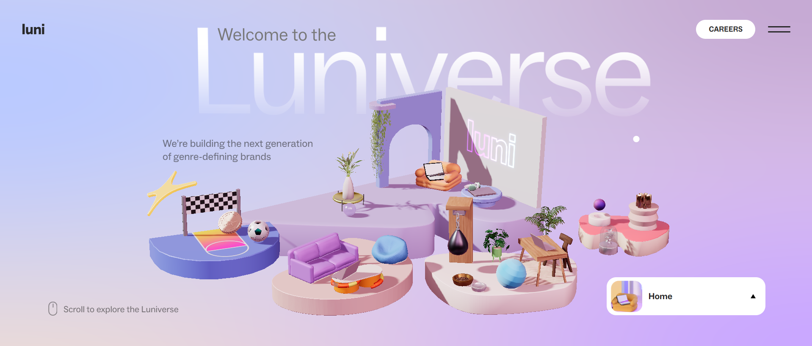
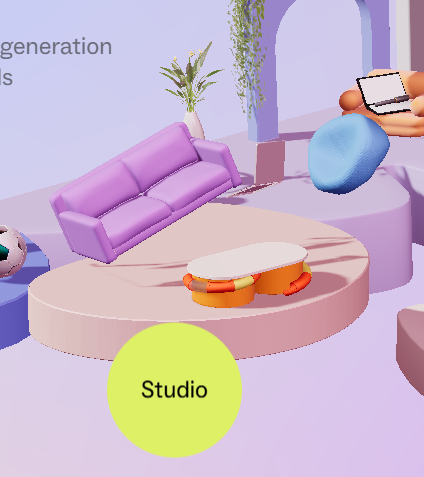
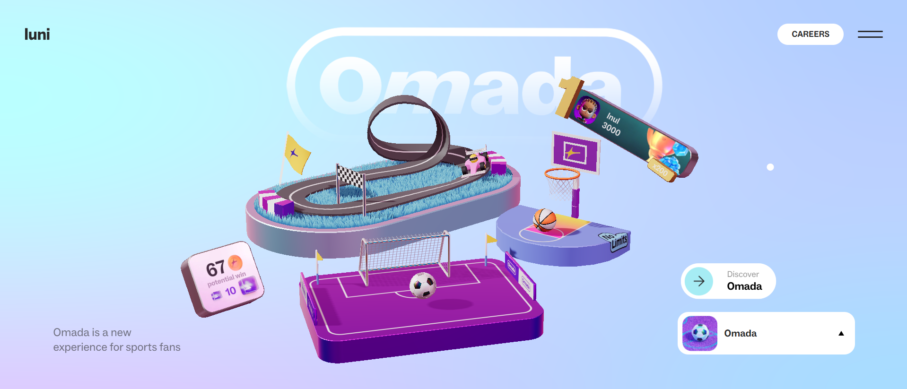
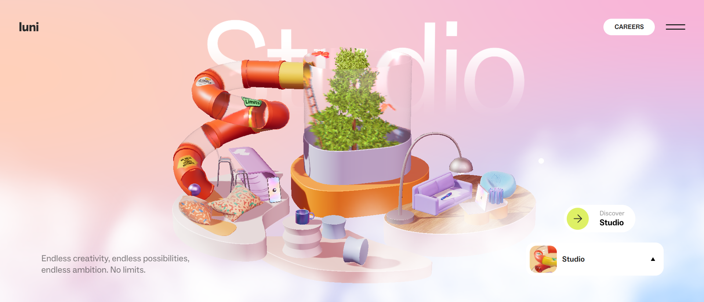
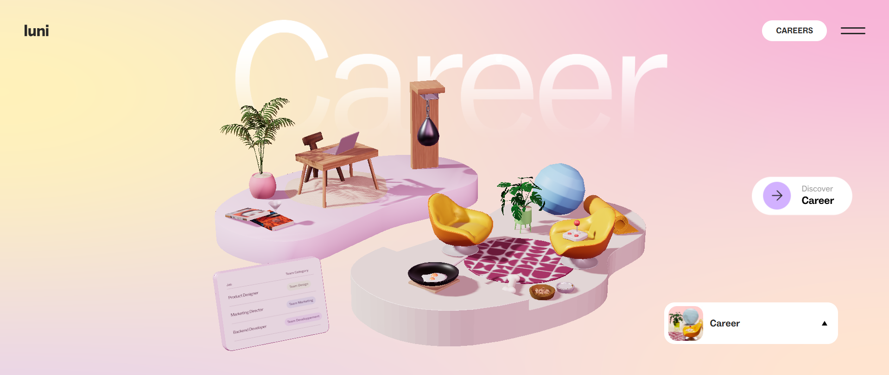
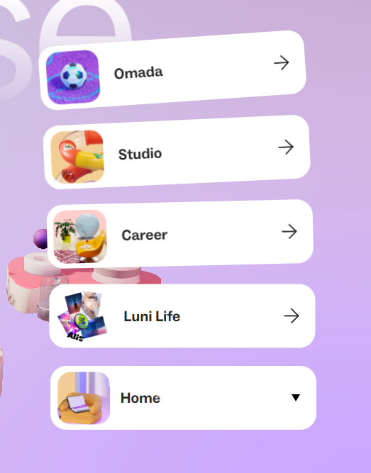
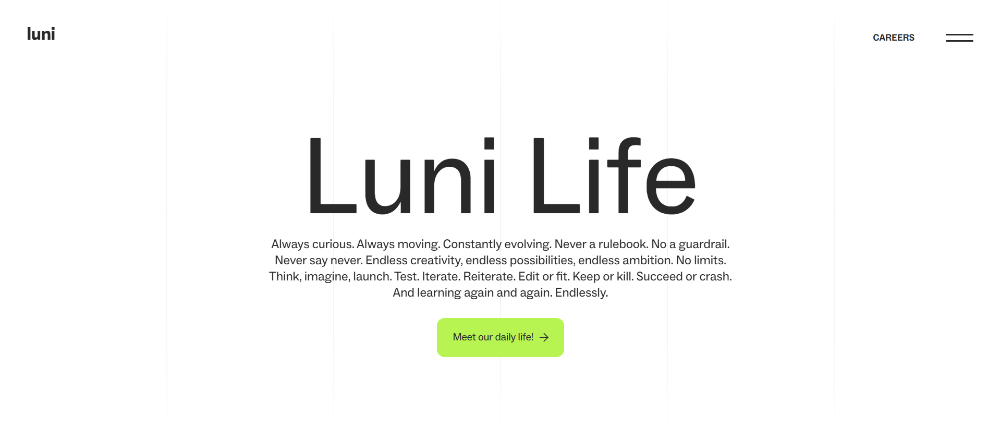
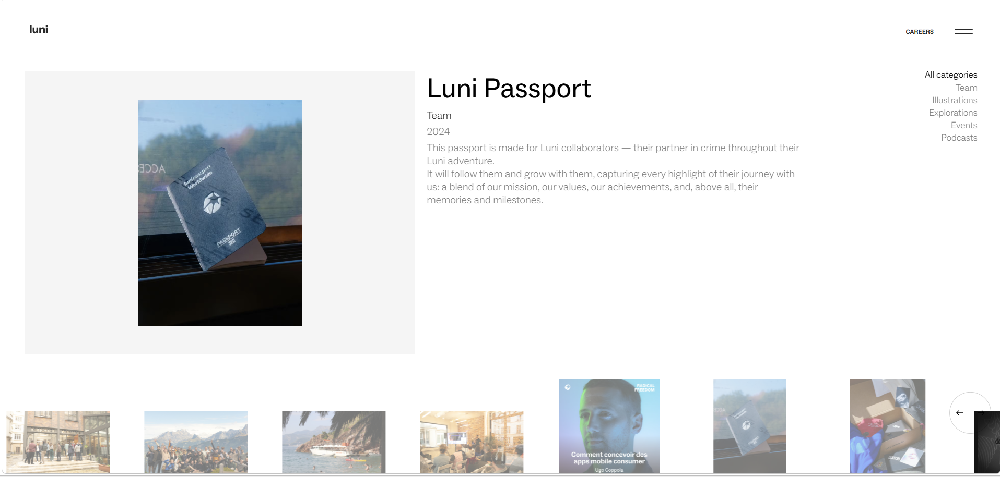

Image 1 shows the landing / Home page of the Luniverse website, with one main island surrounded by four smaller ones. The second image shows what happens when users hover over each island, revealing different animations for each one.
1. What was the first thing you paid attention to when interacting with the experience?
I instantly loved the theme of the Luniverse site as it had a modern, sleek design and was a visually playful interface with a soft futuristic aesthetic. The colour palette and rounded shapes of the floating islands on the home screen were very appealing and creative. It immediately caught my attention and sparked curiosity for interaction. The first thing I did was move my cursor between each island, as I was really drawn to the floating effect and was drawn to how smooth the transitions and motion felt, making the interaction feel fluid and immersive.
2. Spend two minutes with the experience and create a list of each of your discrete actions.
1★ Once the page loaded, I scrolled my cursor along the 4 smaller islands back and forth to see the interactive effect and the cursor changing to different text and colours. I was fascinated by the smooth movements of the site.
2★ I noticed the cursor change on the main island, indicating that a certain item is an interactive element and can be pressed. After clicking it a couple times, I went to explore the left island ‘Omada’.
3★ I also noticed that moving my cursor in circles and to all four corners would make the perspective change. I explored each of the islands from left to right.
4★ In ‘Omada’ I clicked the soccer ball and spent about a full minute scoring goals. I played around with the scoreboard which had 2 buttons to add and remove points. I then moved to the basketball and did 3-5 shots before exploring the racetrack.
5★ Once I was done with the Omada page, I scrolled up and down, discovering that I could access each section this way instead of going back to the main page, as well as an expandable contents page that I could use to move around the site.
6★ In the ‘Studio’ section I found two devices that had an interactive screen which I could turn on and off. I clicked the slide many times hoping for an interactive element, then spam clicked on the tree as it spawned butterflies.
7★ I repeated the same in the ‘Career’ section, looking for interactives, and once I was finished, I scrolled to the home page and used the expandable categories to take me to the ‘Luni Life’ page.
8★ I didn't spend much time on the page due to its minimal design, dropping my interest. I explored the ‘Meet our daily life’ page which took me to a portfolio. I ended my research session here after looking through a couple photos.
3. What part of the experience did you spend the most time engaging with?
I engaged most with the floating islands on the home page as I was really impressed by its sleek looks, animated moments when objects jumped up, and the cursor changes as well. I loved seeing the smooth movements as I moved my cursor between the 4 options.
4. What was the most common action in your two minute interaction with the experience?
My most common action was continuously clicking on different objects throughout the scene. Once I realised that certain objects had fun, interactive elements, I would click on many different things through in search to find another interactive animation.



5. What is your impression of the intended primary goal of the interactive experience?
I believe the primary goal of this interactive experience was to immerse users in visual storytelling to communicate the brand's identity and purpose. The interface encourages exploration through clicking and scrolling, as users feel curious and impressed by the graphics and animation they encounter.
6. How does the interactive experience communicate this primary goal?
As I explored the Luniverse website, the use of imagery, colour and playful graphics made me think the platform was focused on the creativity side, something to do with digital art, design tools or a platform to build on ideas. However, after finding their brand section, I learnt that it was actually a blockchain platform designed to help businesses and developers build and run apps without dealing with its technical side. I feel that the sites creative graphics and lack of text/ information on the main pages, mislead me a little and reinforced me to beleive it was a platform for creative expression.
7. What is your impression of how the experience should be interacted with over time? (For how long and how many different times)
Luniverse is an experience that can be fully explored in one single visit (10-15 minutes) rather than over multiple sessions. The layout and visuals are designed to guide the users through a continuous and engaging journey where everything can be discovered in one go. Users won't feel the need to return to it more than 3 times, as the natural flow of the site allows them to visit every page that information is provided.
8. How does the interactive experience communicate how it should be interacted with over time?
The website mostly consisted of visuals and graphics that are presented in a smooth continuous flow, encouraging users to move through the pages in a single, uninterrupted journey. There are no features that suggest long-term engagement or reading. Once the user has scrolled through all visuals, they are done with what the site intended to show, making the experience brief and completable in one session.



9. What other media forms (digital or otherwise) does the experience reference?
The Luniverse platform consisted of a mix of media forms, such as playful illustrations, graphics, animated elements and even photography on their 'Meet Our Daily Life' page, where illustrations and photographs were presented alongside text creating a storybook / creative portfolio feel. The experience felt like a structured and artistic narrative.
10. What does this reference/s communicate to you about how you should act when engaging with your research experience?
By using animations and interactive elements, the platform encourages users to approach their platform with curiosity and creativity, as their presentation aims to feel light, intuitive and game-like. The creativity will hook visitors in and encourage them to actively explore and engage with their page.
11. What does this reference/s communicate to you about how you should feel when engaging with your research experience?
This communicated that I should feel curious, open minded and engaged while interactive with the Luniverse experience. the website encourages a sense of lightness and playfulness, making the platform feel fun rather than more technical or complex. the overall art style used sets a welcoming and imaginative tone, suggesting that users should approach the site with a sense of discovery and curiosity.
12. What is the most frustrating part of the interaction to you and what makes that part frustrating?
The most frustrating part of the interaction was the disconnect between the visual design of the interface and the actual purpose of the brand. The site was focused on colourful graphics and elements, where i struggled to find clear information on what the Luniverse site does. Most pages prioritised visuals over context and I had to click through multiple smaller sections which took me to a page which had a small paragraph and then led to another page that looked like a creative portfolio.
13. What is the most satisfying part of the interaction to you and what makes that part satisfying?
The most satisfying part was scrolling up and down on the main page as it had a smooth transition between the four categories. The elements on the screen would float upwards and out of the screen as the next elements drifted in. The large text in the back had a slow fade transition, as well as the background colour shifting as it moved to the next page. These elements combined made a fluid and satisfying transition. I found myself interacting with it multiple times to experience the smoothnees of the motion and animations.